Architecting Ideas Into
Production Software
At Warp Speed.
I am Mahmoud Walid. My superpower is orchestrating autonomous AI agents, prompt engineering, and clean architecture to build rock-solid fullstack systems in hours instead of weeks.

// INTERACTIVE SHELL
Cyber Terminal Emulator
Type commands directly to interact with my personal AI agent environment.
[SYSTEM BOOT SUCCESSFUL] Vibe Coder v2.4 initialized. Connected to GitHub @Mahmoud-Walid1.
Type help to explore available commands (or try vibe, skills, bot, matrix).
user@mahmoud:~$ welcome
Welcome to the AI-Native Engineering Workspace! Feel free to enter any command below.
user@mahmoud:~$
// GITHUB AUTO-SYNC ENGINE
Public Repositories & Experiments
Synced dynamically via GitHub REST API with real-time stats & live Vercel demos.
Connecting to API...
Loading repositories...
// CAPABILITIES MATRIX
Engineering Superpowers
The tools, frameworks, and AI workflows I leverage to build scalable systems.